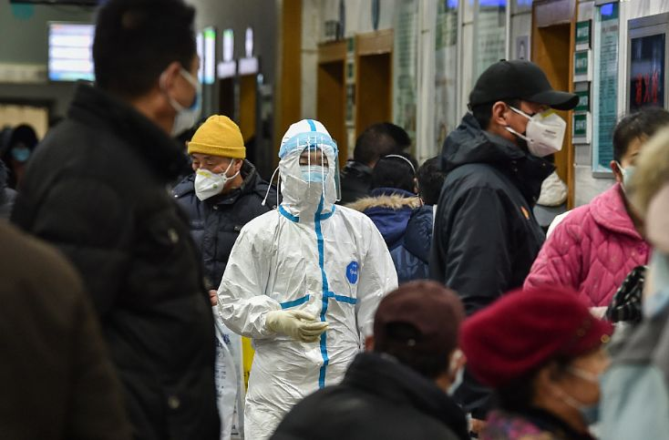
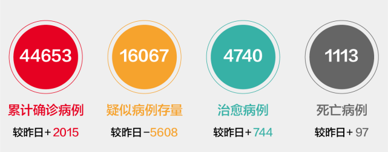
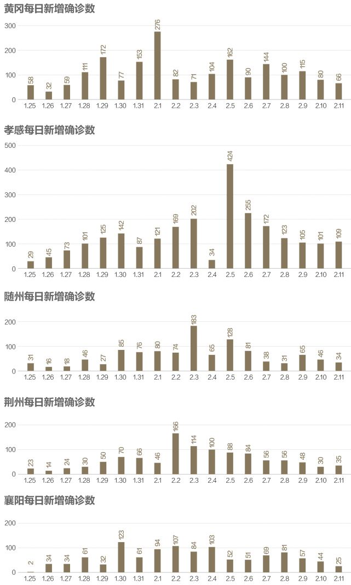
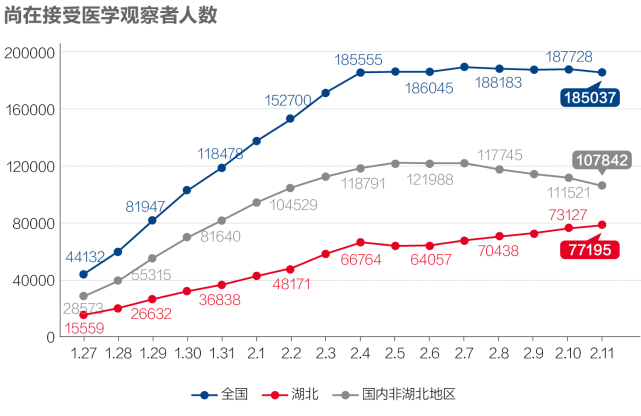
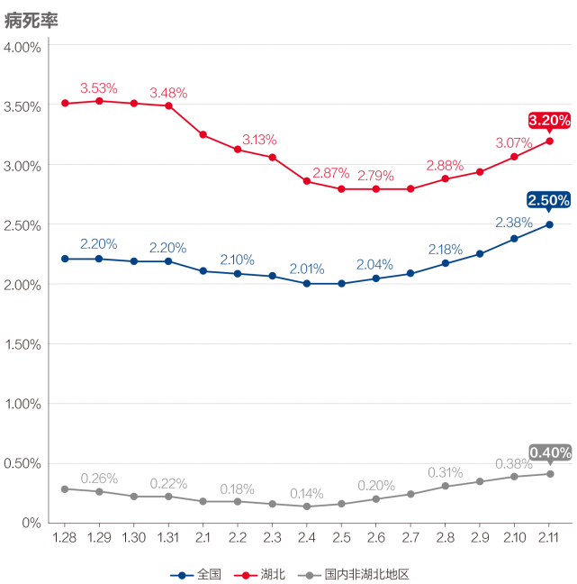

数说疫情0211：形势趋好，开始“测顶”
原文链接 备份链接 _ 今起武汉全市范围对居民小区实施封闭管理。小编身在武汉，响应号召，更要在家安心分析数据。武汉挺住！ _ 文 |《财经》数据研究员 徐进 图 | 视觉中心总监 黎立 编辑 | 谢丽容 1. 今日概况 2月10 …


文 |《财经》数据研究员 徐进
图 |《财经》视觉中心
编辑 | 谢丽容
1. 今日概况：
根据国家卫健委数据，2月11日0—24时，31个省（自治区、直辖市）和新疆生产建设兵团报告，新增确诊病例2015例（湖北1638例），重症病例增加871例（湖北897例），新增死亡病例97例（湖北94例，河南、湖南、重庆各1例），新增疑似病例3342例（湖北1685例）。

图1

图2
国内非湖北地区微降，降速减缓。

图3
湖北非武汉地区继续下降，下降趋势得以巩固。数字显示，紧邻武汉的孝感、黄冈以及随州、荆州、襄阳等1000例病例以上城市新增病例均出现过跳升、陡升而后稳定、回落。可以推测这些城市的洪峰大约已分别在2日1日-5日期间通过。

图4

图5
武汉新增病例数出现确认性回落。2月6号以来，武汉在中央指导组直接指挥督导下发起攻坚战，对确诊、疑似、未明发热和密切接触者“四类人员“进行全市彻底排查，做到”应收尽收、不漏一人“。综合数据和一线报道，显示此战大局已定，形势正发生根本性扭转。

图6
武汉增长率回落到6%以下，倍增时间延长到12天以上。湖北非武汉地区下降到4%，倍增时间延长到18天以上。

图7
非湖北地区接受医学观察人数连续5日下降。
今天是湖北开始发布此待排查数据的第四天。湖北每日新增疑似病例反弹后已连续两日下降。

图8
我们看出国内非湖北地区稳步趋降。湖北在连续两日下降基础上，继续大幅下降5000多例。但值得注意的是，湖北从今天起发布了“新增临床诊断病例”4890例和“现有临床诊断病例”10567例以及“疑似病例、临床诊断病例集中隔离”15514人。此项新分类可能会分流部分疑似病例，应与武汉攻坚战“应收尽收”有关。此处可比口径也许用15514人更为合理。国内非湖北地区稳步下降。
图9
非湖北区呈现稳定。湖北地区住院治疗人数继续增加，增幅减小。

图10
国内非湖北地区、武汉新治愈人数都在增加，湖北非武汉有所回落。

图11
非湖北地区新增治愈与新增确诊的交叉点近在咫尺。“拐点”将至！

图12
由于病程发展，经过一段时间后，病死率在此阶段持续小幅回升当属正常。因为疫情暴发初期，每日入院新增病例猛增，经过一段时间滞后，会带来死亡人数的较快增加；另一方面，随着疫情得到控制，每日新增确诊病例会出现明显下降。这一增（分子）一降（分母），一定会导致病死率回升。只有在疫情基本结束这个数值才会真正逼近“最终病死率”。
小结：武汉攻坚成功，全局扭转。非湖北地区“拐点”将至。
● 数说疫情

▲点击图片查看更多疫情报道
责编 | 蒋丽 lijiang@caijing.com.cn
本文为《财经》杂志原创文章，未经授权不得转载或建立镜像。如需转载，请在文末留言申请并获取授权。
原文链接 备份链接 _ 今起武汉全市范围对居民小区实施封闭管理。小编身在武汉，响应号召，更要在家安心分析数据。武汉挺住！ _ 文 |《财经》数据研究员 徐进 图 | 视觉中心总监 黎立 编辑 | 谢丽容 1. 今日概况 2月10 …
原文链接 备份链接 图/法新 文 |《财经》数据研究员 徐进 图 | 视觉中心总监 黎立 编辑 | 谢丽容 1. 今日概况： 2月9日0—24时，31个省（自治区、直辖市）和新疆生产建设兵团报告，新增确诊病例3062例（湖北2618 …
原文链接 备份链接 文 |《财经》数据研究员 徐进 编辑 | 谢丽容 元宵节过完了，再下来是“龙抬头”。 1、 今日概况 2月8日0—24时，31个省（自治区、直辖市）和新疆生产建设兵团报告，新增确诊病例2656例（湖北2147例），新增 …
原文链接 备份链接 【财新网】（记者 赵今朝 综合）世卫组织正式将新冠病毒肺炎正式命名 “COVID-19”。疫情形势依然复杂严峻，疑似病人存量缓慢消化，医疗资源“捉襟见肘”，基层社区防控落实不到位。保卫战胶着状态之下，湖北省卫健委骤然 …
原文链接 备份链接 非常时期，武汉成了全国人民挂念、祈福的城市。封城后，武汉人民的真实生活是什么样？ 正和岛自1月26日起特别推出《叶青：我在武汉疫区的第N天》专栏。叶青是一位定居武汉40年的市民，也是一名学者和官员。接下来的一段时间， …